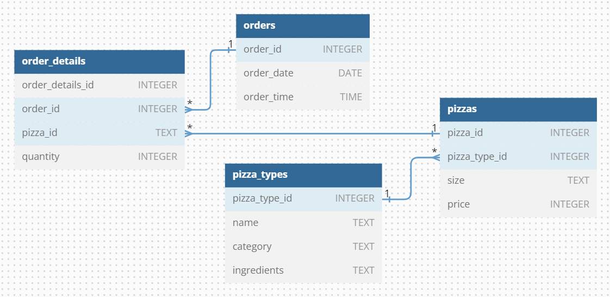
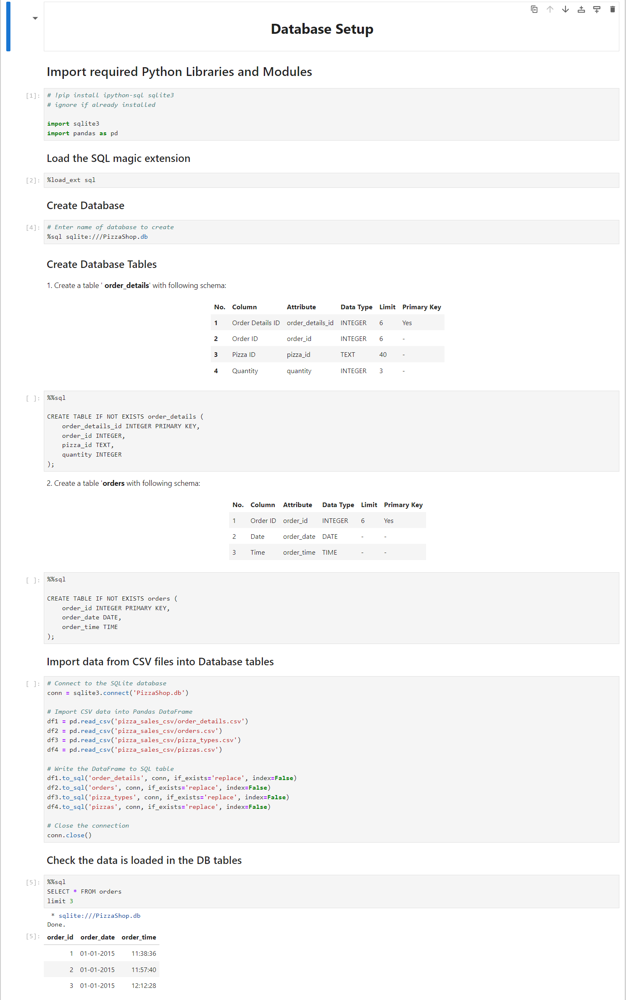
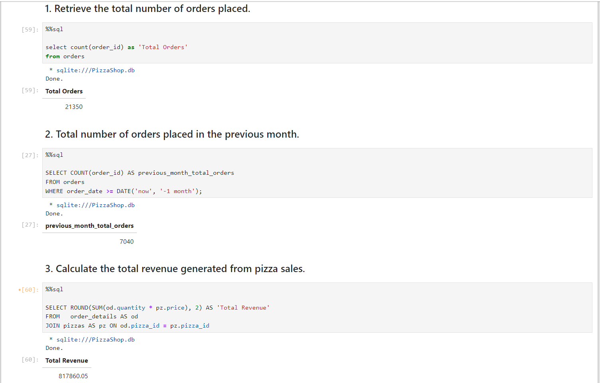
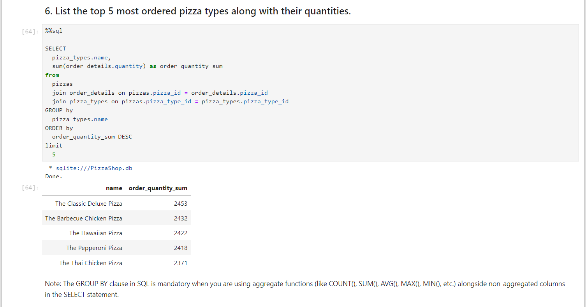
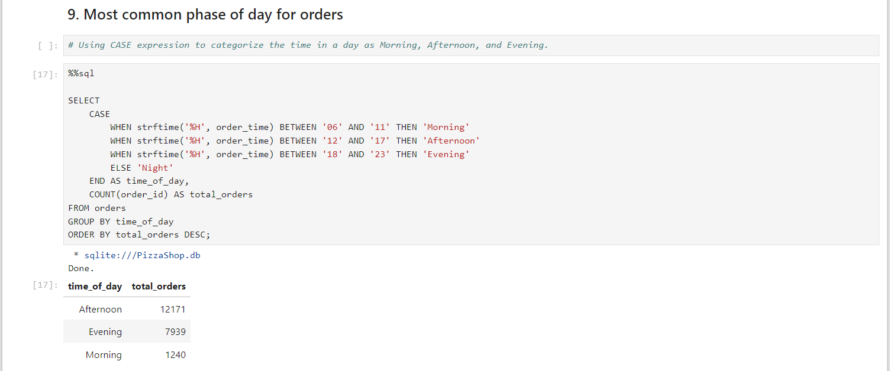
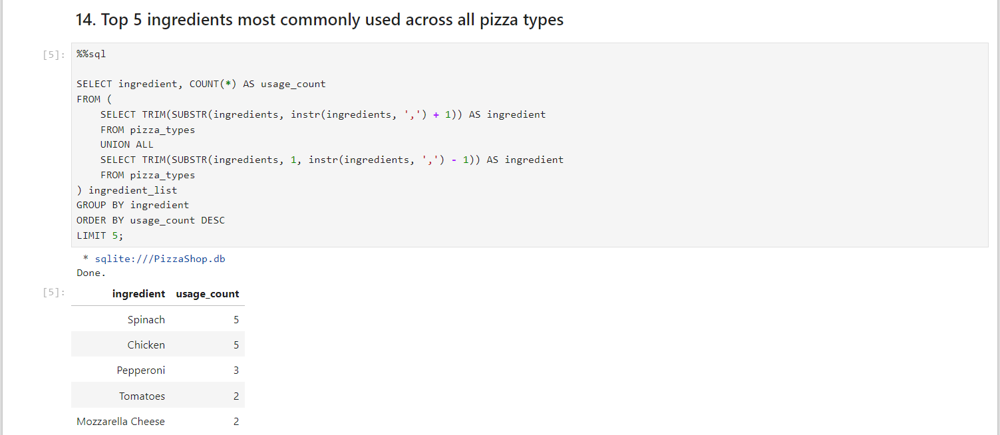
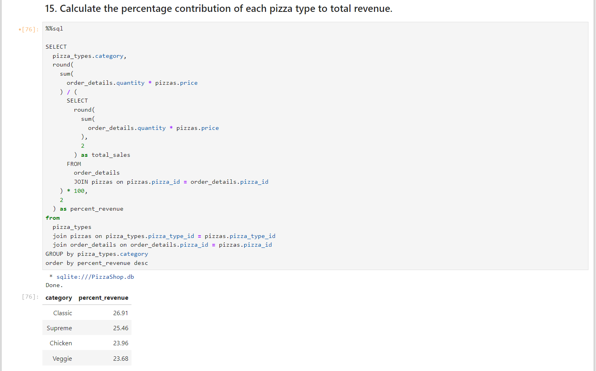

Project Background
This project demonstrates a comprehensive approach to data analysis
using SQL queries, entirely conducted within Jupyter Notebooks. A unique
aspect of this project is the absence of traditional DBMS software such
as MySQL Workbench or PostgreSQL. Instead, utilized the SQLite module in
Python to create and manage the database, tables, and schema directly
within the notebook environment.
The project showcases the seamless integration of Python and SQL, where
Python’s powerful Pandas library is leveraged for handling dataframes
and importing CSV files into database tables. This approach not only
simplifies the workflow but also enhances flexibility, making it easier
to analyze and manipulate data all in one place.
Objectives:
Conduct a thorough analysis of pizza shop sales data by formulating
and answering key business questions using SQL queries. This will
provide insights into sales trends, customer behavior, and product
performance.
Revisit and reinforce fundamental SQL concepts by applying them in
real-world scenarios, ensuring a strong foundation in query writing
and data manipulation.
Explore and implement advanced SQL concepts, including nested queries
and window functions, to perform complex data analysis and gain deeper
insights from the dataset.
Scope of the Project:
This project involves a comprehensive exploration of data analysis
techniques using SQL within a Python environment. The key steps and
components of the project include:
-
Library Importation:
-
Import essential Python libraries such as sqlite3 for database
management, pandas for data manipulation, and ipython-sql to
facilitate SQL execution directly within Jupyter Notebooks.
-
Ensure the environment is set up to allow seamless integration of
SQL and Python code, enabling efficient data handling and
analysis.
-
Database Creation:
-
Establish a new SQLite database file within the Jupyter Notebook
environment. The database is created programmatically using
Python’s SQLite module, eliminating the need for external DBMS
software like MySQL Workbench or PostgreSQL.
-
Define the database structure to ensure it aligns with the
project’s data analysis requirements.
-
Table Creation:
-
Design and create multiple tables within the SQLite database
according to the project's data schema. Each table is carefully
structured to store relevant data points, ensuring data integrity
and accessibility.
-
Include tables for various entities (e.g., orders, customers,
products) with primary keys, foreign keys, and appropriate data
types.
-
Data Importation:
-
Load data into the SQLite tables from external CSV files using
Python’s Pandas library. This involves reading the CSV files into
Pandas DataFrames and then transferring the data into the database
tables.
-
Ensure that the imported data adheres to the predefined schema and
that there is no overwriting of existing table structures.
-
SQL Query Execution:
-
Execute a series of SQL queries within the Jupyter Notebook to
analyze the data stored in the SQLite database. This includes both
basic queries to retrieve specific data and advanced queries
involving nested queries and window functions.
-
Address specific business questions related to pizza shop sales,
using SQL to extract meaningful insights and trends from the data.
-
Data Analysis:
-
Perform a detailed analysis of the query results to draw
actionable insights.
-
Document findings and present them in a clear and concise manner,
supported by data visualizations and summaries where appropriate
(To be added).
Dataset
The dataset comprises multiple tables that represent various aspects of
a pizza shop's sales and operations. These tables are interrelated,
allowing for comprehensive data analysis on orders, pizza types, and
detailed order items.
Entity-Relationship Diagram (ERD)

Snapshots
Setup with database:

Sample question SQL queries and results:





Conclusion
This project successfully demonstrated the integration of SQL and Python
for comprehensive data analysis within a Jupyter Notebook environment.
By leveraging SQLite, we were able to create and manage a complete
database system without relying on external DBMS software, which
highlighted the flexibility and power of in-notebook data manipulation.
Reference:
WsCube Tech -
Link
Referred for dataset of Pizza shop sales and sample questions for
analysis.